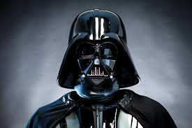

El Lado Oscuro
El lado oscuro de la Fuerza o reverso tenebroso de la Fuerza era un aspecto de la Fuerza. Las personas que utilizaban el Lado Oscuro obtenían su poder de emociones desatadas como la ira, el odio y la agresividad. Los Sith fueron los mayores practicantes del Lado Oscuro y eran los enemigos mortales de la Orden Jedi, que seguía el Lado Luminoso de la Fuerza. Hubo otros como la Inquisición, que también explotaron los poderes del Lado Oscuro.
